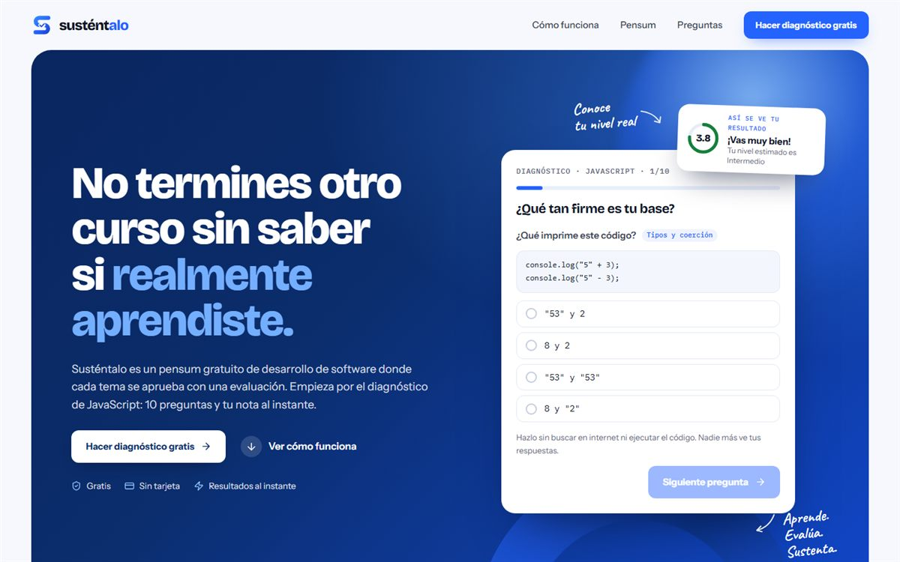

01
Live · Founder
Susténtalo
- The problem
- Learning to code in Spanish is expensive, and almost nobody checks whether you actually learned anything: you watch videos and move on.
- What I did
- A free curriculum of 12 modules and 100 topics where every topic is passed with an assessment and every module with an oral defense.
- The result
- A live landing with a 10-question JavaScript diagnostic that grades you 0 to 5 on the spot, and a waitlist on serverless PostgreSQL.
JavaScriptBootstrap 5
Node.jsPostgreSQL
Vercel Functions